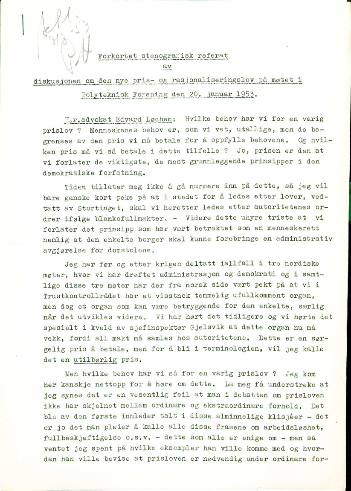

Session 1.2: Collecting, reading and cleaning text data
We’ll need the following libraries for this session
library(readtext)
library(tidyverse)
library(tabulizer)The Charles Dickens novels can be downloaded here, here, here, and here.
1 Reading in Documents
We’d be nowhere without documents! And getting them into R is no trivial task. The first question to ask is, what is the format of the documents I want to read into R?
1.1 Reading in txt, doc or pdf files
Historians are interested in old books and there are a lot of old books freely accessible on the web already digitized (and some of them even cleaned). For an example, I’ve gone to Project Gutenberg and downloaded four Charles Dickens novels. To demonstrate a point, I have saved them in four different formats: Word, pdf, txt, html and saved them (links just above) with the file names “[Novel_name] - [Author] - [Year]”.
Now let’s take a look at what is in that folder. I’ve also saved some files as Word and PDF files.
(books_list <- list.files(path = "data/docs", full.names = TRUE))## [1] "data/docs/A Christmas Carol - Charles Dickens - 1843.pdf"
## [2] "data/docs/David Copperfield - Charles Dickens - 1850.txt"
## [3] "data/docs/Hard Times - Charles Dickens - 1854.docx"
## [4] "data/docs/Oliver Twist - Charles Dickens - 1838.html"readtext is a handy R package that will automatically
decide what sort of file it is, read it in, AND will help us out with
variables associated with the document.
books <- readtext(books_list)
# Notice this will save as a readtext object. Let's convert to our tidyverse's format for dataframes, called a tibble.
books <- as_tibble(books)Notice that it has read these texts into R and we now have them all
in a dataframe - one column is a doc_id and the other is
the text. There is no metadata (document variables).
readtext allows us to import variables automatically from
file names (assuming we have informative file names, which, as it
just so happens, we do). As an aside, we could do similar
things with the help of the tidyverse and a function called separate,
but we’ll just use readtext here.
books <- readtext(books_list, docvarsfrom="filenames", dvsep = ' - ', docvarnames = c('Title', 'Author', 'Year')) %>%
as_tibble()
books## # A tibble: 4 × 5
## doc_id text Title Author Year
## <chr> <chr> <chr> <chr> <int>
## 1 A Christmas Carol - Charles Dickens - 1843.pdf "^, A<r C… A Ch… Charl… 1843
## 2 David Copperfield - Charles Dickens - 1850.txt "The Projec… Davi… Charl… 1850
## 3 Hard Times - Charles Dickens - 1854.docx "The Projec… Hard… Charl… 1854
## 4 Oliver Twist - Charles Dickens - 1838.html "The Projec… Oliv… Charl… 1838And we now can save this to a file for easy access next time we work on it. There are multiple ways to do this, one is to save as a csv file.
write_csv(books, "data/dickens_books.csv")It might be worthwhile mentioning that there is an R package for accessing Project Gutenberg that you would actually want to use that would be easier than downloading things by hand.
1.2 PDFs that use columns or other different text layouts
readtext and a similar R package called
pdftools are great but they get flummoxed by weird text
layouts, including kinds you find quite often in official state
documents.

Sample page of Storting proceedings. Bundestag proceedings, and doubtlessly many more, are formatted the same way.
readtext is going to have a hard time with that. You can
try it yourself but it’s going to read from left to right across
columns, rather than the left column first then the right.
As of a couple of years ago one had to get really creative and cut
the pdfs up and then sew them back together (there might still be times
when you want to do this, see the magick
package) but now we have an R package that is quite smart about this
called tabulizer. The package has java dependencies that
might create huge problems in Windows. Another option is to use
Rstudio’s quite cool cloud service at https://rstudio.cloud. We can upload documents there,
install the packages we need on then download the resulting dataframe we
build there.
Let’s take a historical Storting melding. The front page looks like this.
Clear machine-readable text but in columns.
Hmm, multi-column format. First we might try readtext
and print out the first 1000 characters to see how things look. Save the
pdf somewhere you’ll know where to access it (I’ve saved midne in the
“data” folder in my working drive).
df<- readtext('data/stmeld8_kongo.pdf')
str_sub(df$text, 1, 1000) # if we print out in cat() we see that the spacing is preserved from the original pdf## [1] " Utenriksdepartementet\n\n\n\n\n St. meld. nr. 8.\n (1960-61)\n Melding om Norges deltaking i De Forente Nasjoners\n vaktstyrke i Kongo.\n Tilråding fra Utenriksdepartementet av 23. september 1960,\n godkjent ved kongelig resolusjon samme dag.\n\n (Foredratt av utenriksminister Halvard Lange.)\n\n Den 30. juni 1960 ble tidligere Belgisk Kongo Samtidig med dette brøt Katanga-provinsen\nproklamert som selvstendig stat. seg løs og proklamerte seg som selvstendig\n Avtalen om at området som hadde vært stat.\nunder belgisk overhøyhet siden 1885, skulle\nbli uavhengig, var inngått i Brussel i januar Mot denne bakgrunn sendte den kongole\n1960 mellom den belgiske regjering og poli siske regjering den 12. juli en telegr"It looks like we’ve read in a bunch of text, and we have. But if we
look a bit closer, we see that the first sentence of the document in the
pdf reads: “Den 30. juni 1960 ble tidligere Belgisk Kongo proklamert som
selvstendig stat.” But readtext ignores the column space
and has: “Den 30. juni 1960 ble tidligere Belgisk Kongo Samtidig med
dette brøt Katanga-provinsen\nproklamert som selvstendig stat.” And we
see the whitespace that is actually the column break. There are actually
methods we’re going to use that will throw out word order and this sort
of thing wouldn’t matter. But not always by any means.
The tabulizer package is just as easy. Tabulizer can be problematic to install because of Java dependencies but run either from your own PC or from the RStudio cloud, it gives a much better result for no extra work.
file <- 'data/stmeld8_kongo.pdf'
numpages <- get_n_pages(file)
text <- extract_text(file, encoding = 'UTF-8', pages=1:numpages) # this will return a vector of one character string per page. Take the pages option out of the call and we get one collapsed character string for the whole document. Finally, tabulizer is an incredibly powerful package. If you have
tables you’d like to read from pdfs, as economic historians very well
might, I highly recommend tabulizer’s very cool
extract_areas() function. Say we have a page like below and
we’d like to extract just the table from Statoil’s 2001 Sustainability
Report (direct
link).

Page 44 of Statoil’s 2001 Sustainability Report.
We can do this interactively with tabulizer. We can call
extract_areas() and then highlight the part of the page
where the table is located telling tabulizer where to extract the table
data from.
extract_areas("data/sustainability-report-2001-equinor.pdf", 44)If you have numerous documents with tables at the same place you can
also specify location to have tabulizer do this over
numerous documents. Powerful stuff.
1.3 Reading in non-machine readable PDFs (hardest and probably most likely for historians)
Perhaps the documents we historians are most likely to want to analyze are hand-scanned archival documents. These we might have as pictures (jgp or gif or tiff formats perhaps) or pdf files on our local machine. To make these digitally analyzable we’ll need to use optical character recognition (OCR) technology. This is a rapidly progressing frontier of machine learning and the technology is constantly getting better. Humans are still far better at reading and recognizing text than computers but the gap is steadily shrinking and might one day in the future disappear. For now though, we’ll have to deal with less than perfection.
R has “bindings” (packages that give access to) tessaract, which is
an open source Google OCR project. Below is an example using pdftools to
do this from .pdf (see the Tessaract https://cran.r-project.org/web/packages/tesseract/vignettes/intro.html
for an example of how to do this for .jpg files using the R package
magick.)
The way OCR works is that the algorithms are made to “learn” by ingesting a large amount of data for which the right answers are known (ie. images of text that have been, perfectly, digitized). The algorithms trained to recognize English are included in the package, anything else has to be downloaded by hand as shown below (to find you needed language’s three letter code, see the https://github.com/tesseract-ocr/tessdata github repository and especially the list of available languages https://tesseract-ocr.github.io/tessdoc/Data-Files-in-different-versions.html).
Here is an example from my archive photos, a document form the Norwegian Riksarkivet in Oslo.

Tesseract takes in a file in an image format so if we have a PDF
we’ll need to convert it to an image format (well use .png here) first.
We’ll use the package pdftools to do this. Let’s first find
a document to practice on. All the defaults in Tesseract are English so
this is generally fairly straightforward. Other languages are more
challenging so we’ll do a Norwegian example.
We’ll take the King’s opening speech to the Stortinget in 1925. If we got to historical documents on the Stortinget’s https://www.stortinget.no/no/Saker-og-publikasjoner/Stortingsforhandlinger/#historiske-dokumenter, go to “Publikasjonstitler”, 1925 and search for “Hans Majestet Kongens tale til det 74de ordentlige Storting ved dets åpning” (or just “hans majastet” will probably work to). Download the speech, preferably with a helpful title such as “Storting_KongHaakon_1925.pdf” or something of the sort.
norsk <- tesseract(language='nor') #before doing this you will need to have run: tesseract_download('nor')
png_archivedoc <- pdftools::pdf_convert("./data/Storting_KongHaakon_1925.pdf", dpi = 600)
text <- ocr(png_archivedoc, engine=norsk)First, it needs to be cleaned up, which we’ll be turning to momentarily. Even cleaned it’s not perfect. But not half bad.
2 Cleaning up text
As we’ve seen already, almost always when documents in the real world are read into R they are highly imperfect. They will have all kinds of crazy tags, whitespaces (which also show up as tags under some viewing methods), and other things we may want to strip. In fact, in the real world collecting and cleaning data generally takes at least as long as analysis. A fairly balanced workshop on text analysis would probably rightly spend at least half of its time on these issues and less on analytics. We’ll get on to analytics in the next section but it’s important to realize that these initial ones are just as important, even if they seem a little dull and uninspiring.
We’ll use two sample corpora as examples and test corpora for the rest of the workshop. The first is Nobel Peace Prize award ceremony speeches since 1905. They are scraped from https://www.nobelprize.org using a slightly more advanced methods than we’ll discuss here. For code and brief discussion, see the Appendix. The second is a corpus of Sustainability Reports for several major international oil companies.
The nobel corpus saved as csv is here and the oil company sustainability reports here. First let’s read them into R.
nobel <- read_csv("data/NobelPeace.csv", locale=locale(encoding = "latin1")) %>%
select(!...1)
sr <- read_csv("data/srps.csv")2.1 Viewing your tibble corpus
So after the first two sessions we’re assuming we have our corpus in
a tibble, with one column being the text of the documents and other
columns of metadata – year and company for the Social Responsibility
reports, laureate and year for our Nobel Peace Prize award speeches.
First things first, there are numerous ways to try to get an overview of
the data. If you just enter the dataframe’s name in R you will get the
first few lines. Alternately, you can use print() – tibbles
are built
to make printing and viewing dataframes easier. If we want to print all
rows (you have to be careful with this, if you have millions of rows
this will probably crash R) we can do this.
nobel # note that this tells you the datatype of each column## # A tibble: 92 × 3
## Year Laureate AwardSpeech
## <dbl> <chr> <chr>
## 1 1905 Bertha von Suttner " On behalf …
## 2 1906 Theodore Roosevelt "As the Nobel…
## 3 1907 Ernesto Teodoro Moneta, Louis Renault "Ernesto Teod…
## 4 1908 Klas Pontus Arnoldson, Fredrik Bajer "On behalf of…
## 5 1909 Auguste Beernaert, Paul Henri d'Estournelles de Constant "Auguste Beer…
## 6 1910 Permanent International Peace Bureau "Chairman of …
## 7 1911 Tobias Asser, Alfred Fried "Tobias Micha…
## 8 1912 Elihu Root "Elihu Root w…
## 9 1913 Henri La Fontaine "Henri La Fon…
## 10 1922 Fridtjof Nansen "I take pleas…
## # … with 82 more rows
## # ℹ Use `print(n = ...)` to see more rowsprint(nobel, n = Inf)## # A tibble: 92 × 3
## Year Laureate Award…¹
## <dbl> <chr> <chr>
## 1 1905 Bertha von Suttner " On …
## 2 1906 Theodore Roosevelt "As th…
## 3 1907 Ernesto Teodoro Moneta, Louis Renault "Ernes…
## 4 1908 Klas Pontus Arnoldson, Fredrik Bajer "On be…
## 5 1909 Auguste Beernaert, Paul Henri d'Estournelles de Constant "Augus…
## 6 1910 Permanent International Peace Bureau "Chair…
## 7 1911 Tobias Asser, Alfred Fried "Tobia…
## 8 1912 Elihu Root "Elihu…
## 9 1913 Henri La Fontaine "Henri…
## 10 1922 Fridtjof Nansen "I tak…
## 11 1925 Sir Austen Chamberlain, Charles G. Dawes "We st…
## 12 1926 Aristide Briand, Gustav Stresemann "We st…
## 13 1927 Ferdinand Buisson, Ludwig Quidde "The N…
## 14 1929 Frank B. Kellogg " It …
## 15 1930 Nathan Söderblom " It …
## 16 1931 Jane Addams, Nicholas Murray Butler "In aw…
## 17 1933 Sir Norman Angell "In th…
## 18 1934 Arthur Henderson "It is…
## 19 1935 Carl von Ossietzky "Carl …
## 20 1936 Carlos Saavedra Lamas "The N…
## 21 1937 Robert Cecil "Three…
## 22 1938 Nansen International Office for Refugees "This …
## 23 1944 International Committee of the Red Cross " Six…
## 24 1945 Cordell Hull "Corde…
## 25 1946 Emily Greene Balch, John R. Mott "The e…
## 26 1947 Friends Service Council, American Friends Service Committee " The…
## 27 1949 Lord Boyd Orr "Lord …
## 28 1950 Ralph Bunche " Dr.…
## 29 1951 Léon Jouhaux "Alfre…
## 30 1952 Albert Schweitzer "Alber…
## 31 1953 George C. Marshall "When …
## 32 1954 Office of the United Nations High Commissioner for Refugees " The…
## 33 1957 Lester Bowles Pearson "The N…
## 34 1958 Georges Pire " The…
## 35 1959 Philip Noel-Baker "Frequ…
## 36 1960 Albert Lutuli " Thi…
## 37 1961 Dag Hammarskjöld "The N…
## 38 1962 Linus Pauling "Short…
## 39 1963 International Committee of the Red Cross, League of Red Cross … "The N…
## 40 1964 Martin Luther King Jr. " Not…
## 41 1965 United Nations Children's Fund "The d…
## 42 1968 René Cassin "The l…
## 43 1969 International Labour Organization "When …
## 44 1970 Norman Borlaug "In th…
## 45 1971 Willy Brandt " The…
## 46 1973 Henry Kissinger, Le Duc Tho "Your …
## 47 1974 Seán MacBride, Eisaku Sato "Your …
## 48 1975 Andrei Sakharov "Trans…
## 49 1976 Betty Williams, Mairead Corrigan "Trans…
## 50 1977 Amnesty International "Trans…
## 51 1978 Anwar al-Sadat, Menachem Begin "Trans…
## 52 1979 Mother Teresa "Trans…
## 53 1980 Adolfo Pérez Esquivel "Trans…
## 54 1981 Office of the United Nations High Commissioner for Refugees "Your …
## 55 1982 Alva Myrdal, Alfonso García Robles "Trans…
## 56 1983 Lech Walesa "Your …
## 57 1984 Desmond Tutu "Your …
## 58 1985 International Physicians for the Prevention of Nuclear War "Your …
## 59 1986 Elie Wiesel "Your …
## 60 1987 Oscar Arias Sánchez "Your …
## 61 1988 United Nations Peacekeeping Forces "Your …
## 62 1989 The 14th Dalai Lama "The N…
## 63 1990 Mikhail Gorbachev "Your …
## 64 1991 Aung San Suu Kyi "Your …
## 65 1992 Rigoberta Menchú Tum "Your …
## 66 1993 Nelson Mandela, F.W. de Klerk "Your …
## 67 1994 Yasser Arafat, Shimon Peres, Yitzhak Rabin "Your …
## 68 1995 Joseph Rotblat, Pugwash Conferences on Science and World Affai… "Your …
## 69 1996 Carlos Filipe Ximenes Belo, José Ramos-Horta "Trans…
## 70 1997 International Campaign to Ban Landmines, Jody Williams "Trans…
## 71 1998 John Hume, David Trimble "Trans…
## 72 1999 Médecins Sans Frontières "Trans…
## 73 2000 Kim Dae-jung " Tra…
## 74 2001 United Nations, Kofi Annan " Tra…
## 75 2002 Jimmy Carter "Trans…
## 76 2003 Shirin Ebadi "Trans…
## 77 2004 Wangari Maathai "Engli…
## 78 2005 International Atomic Energy Agency, Mohamed ElBaradei "Your …
## 79 2006 Muhammad Yunus, Grameen Bank "Your …
## 80 2007 Intergovernmental Panel on Climate Change, Al Gore "Norwe…
## 81 2008 Martti Ahtisaari "Norwe…
## 82 2009 Barack H. Obama "© THE…
## 83 2010 Liu Xiaobo "Your …
## 84 2011 Ellen Johnson Sirleaf, Leymah Gbowee, Tawakkol Karman "Your …
## 85 2012 European Union (EU) "Your …
## 86 2013 Organisation for the Prohibition of Chemical Weapons "Your …
## 87 2014 Kailash Satyarthi, Malala Yousafzai "Norwe…
## 88 2015 National Dialogue Quartet "Your …
## 89 2016 Juan Manuel Santos "Norwe…
## 90 2017 International Campaign to Abolish Nuclear Weapons (ICAN) "Norwe…
## 91 2018 Denis Mukwege, Nadia Murad "Norwe…
## 92 2019 Abiy Ahmed Ali "Your …
## # … with abbreviated variable name ¹AwardSpeechOther options are glimpse() (tidyverse) and
str() (baseR) that give you different ways to visualize a
bit. Often the easiest is to ask R to open a separate window with
View(). Finally, sometimes if you have a long character
string the easiest way to inspect it is simply to print it out
separately. Using the cat() command will format using the
formatting tags in the text – it will look nicer but you might want to
know where the /n and /t tags (newline and tab markers) are.
#View(nobel) # opens a new window
nobel$AwardSpeech[4] # will show the fourth line of the text column of the nobel dataframe## [1] "On behalf of the Nobel Committee of the Norwegian Parliament, I have the honor to extend a welcome to all who have assembled here on this occasion commemorating the great Swedish patron and benefactor, Alfred Nobel, who gave the whole of his large fortune to the solution of problems concerning the future fate of mankind. Since we last met here, one of the winners of the Peace Prize, Randal Cremer, has left us forever1; but he has left behind the memory of a great personality and of a warm friend of peace and of mankind. I invite you all to honor his memory by standing. This year the Nobel Committee has unanimously decided to divide the Peace Prize between former member of the Swedish Parliament, K.P. Arnoldson, and former member of the Danish Parliament, Fredrik Bajer. It is a great pleasure for the Committee to award the prize to these gentlemen, since it is convinced that its choice accords with the general desire in the Scandinavian countries. They have both been untiring advocates of the ideals of peace. K.P. Arnoldson was born in Gothenburg in 1844 and in his youth was in the service of the Swedish Railways. At the same time, however, he also worked for the press as a journalist and author, one of his favorite subjects even then being the cause of peace. From 1882 to 1887 Arnoldson was a member of the Lower House of the Swedish Parliament; In 1883 he put forward a proposal for an address to the king, petitioning for a declaration of permanent neutrality by Sweden. The proposal was not adopted, but the House recommended that the government should continue to work along the lines of the proposal. In the same year Arnoldson helped to found the Swedish Peace and Arbitration Association [Svenska freds-och skiljedomsföreningen], which recently celebrated its twenty-fifth anniversary. Arnoldson was secretary of the association for the first few years and edited its paper. Arnoldson\u0092s work also extended to Norway. The success of his speeches in several of our cities in 1889 and 1890 indirectly encouraged Parliament in 1890 to adopt his arbitration address to the king. Arnoldson has published a number of important works on peace, several of which have been translated into other languages. His most important is The Hope of the Centuries: A Book on World Peace, an account of the growth of the idea of peace among nations and in international relations. Mr. Arnoldson, along with Mr. Fredrik Bajer, was nominated for the Nobel Peace Prize this year with the unanimous support of the Swedish Interparliamentary Group and a number of Norwegian members of Parliament. * * * Fredrik Bajer was born in 1837. Like Tolstoy and many other fighters for peace, he began his career as an officer and from 1856 to 1865 was a lieutenant of Dragoons. He then began his study of foreign languages, becoming an elementary school teacher and later a translator. Already in the 1860\u0092s he was maintaining contact with the peace movement and was in touch with Frédéric Passy, who in 1867 founded the first French peace society1. From 1872 to 1895, Bajer was a member of Parliament for Horsens and during that time did much work for the cause of peace and for women\u0092s rights. Mr. Bajer has been an extraordinarily prolific writer, and in his many articles and pamphlets about and in favor of the cause of peace, he has dealt with practically all the problems involved in the peace movement. Norwegian newspapers have also enjoyed the benefit of his able pen. Special mention should be made of his great study of the question of neutrality. In 1882 he was also responsible for the foundation of a peace society in Denmark, at first called the Society for the Promotion of Danish Neutrality and later the Danish Peace Society2. At a very early date Mr. Bajer took an active part in the European peace movement. In 1884 he participated in the International Congress in Bern and in 1889 he took part both in the International Congress and in the Interparliamentary Conference, held during the Great Exhibition in Paris; since then there have been few of these meetings in which he has not participated. It was at his instigation and suggestion that in 1891 a permanent International Peace Bureau was established in Bern. Bajer was president of its Board of Administration until last year when he declined reelection and was instead named honorary president. Since 1891 Bajer has also had a seat on the council which controls the Interparliamentary Union. He has always shown a great interest in cooperation between the Nordic countries in the cause of peace. He has invariably taken part in the Nordic peace meetings, and it is mainly due to his efforts that a Nordic Interparliamentary Union has been founded3. Fredrik Bajer was nominated this year as a candidate for the Nobel Peace Prize by the Danish Interparliamentary Group, among others, and, together with K.P. Arnoldson, by the Swedish Interparliamentary Group and a number of members of the Norwegian Parliament."cat(nobel$AwardSpeech[4]) # nicer formatting but now you're not seeing formatting tags in the text## On behalf of the Nobel Committee of the Norwegian Parliament, I have the honor to extend a welcome to all who have assembled here on this occasion commemorating the great Swedish patron and benefactor, Alfred Nobel, who gave the whole of his large fortune to the solution of problems concerning the future fate of mankind. Since we last met here, one of the winners of the Peace Prize, Randal Cremer, has left us forever1; but he has left behind the memory of a great personality and of a warm friend of peace and of mankind. I invite you all to honor his memory by standing. This year the Nobel Committee has unanimously decided to divide the Peace Prize between former member of the Swedish Parliament, K.P. Arnoldson, and former member of the Danish Parliament, Fredrik Bajer. It is a great pleasure for the Committee to award the prize to these gentlemen, since it is convinced that its choice accords with the general desire in the Scandinavian countries. They have both been untiring advocates of the ideals of peace. K.P. Arnoldson was born in Gothenburg in 1844 and in his youth was in the service of the Swedish Railways. At the same time, however, he also worked for the press as a journalist and author, one of his favorite subjects even then being the cause of peace. From 1882 to 1887 Arnoldson was a member of the Lower House of the Swedish Parliament; In 1883 he put forward a proposal for an address to the king, petitioning for a declaration of permanent neutrality by Sweden. The proposal was not adopted, but the House recommended that the government should continue to work along the lines of the proposal. In the same year Arnoldson helped to found the Swedish Peace and Arbitration Association [Svenska freds-och skiljedomsföreningen], which recently celebrated its twenty-fifth anniversary. Arnoldson was secretary of the association for the first few years and edited its paper. Arnoldsons work also extended to Norway. The success of his speeches in several of our cities in 1889 and 1890 indirectly encouraged Parliament in 1890 to adopt his arbitration address to the king. Arnoldson has published a number of important works on peace, several of which have been translated into other languages. His most important is The Hope of the Centuries: A Book on World Peace, an account of the growth of the idea of peace among nations and in international relations. Mr. Arnoldson, along with Mr. Fredrik Bajer, was nominated for the Nobel Peace Prize this year with the unanimous support of the Swedish Interparliamentary Group and a number of Norwegian members of Parliament. * * * Fredrik Bajer was born in 1837. Like Tolstoy and many other fighters for peace, he began his career as an officer and from 1856 to 1865 was a lieutenant of Dragoons. He then began his study of foreign languages, becoming an elementary school teacher and later a translator. Already in the 1860s he was maintaining contact with the peace movement and was in touch with Frédéric Passy, who in 1867 founded the first French peace society1. From 1872 to 1895, Bajer was a member of Parliament for Horsens and during that time did much work for the cause of peace and for womens rights. Mr. Bajer has been an extraordinarily prolific writer, and in his many articles and pamphlets about and in favor of the cause of peace, he has dealt with practically all the problems involved in the peace movement. Norwegian newspapers have also enjoyed the benefit of his able pen. Special mention should be made of his great study of the question of neutrality. In 1882 he was also responsible for the foundation of a peace society in Denmark, at first called the Society for the Promotion of Danish Neutrality and later the Danish Peace Society2. At a very early date Mr. Bajer took an active part in the European peace movement. In 1884 he participated in the International Congress in Bern and in 1889 he took part both in the International Congress and in the Interparliamentary Conference, held during the Great Exhibition in Paris; since then there have been few of these meetings in which he has not participated. It was at his instigation and suggestion that in 1891 a permanent International Peace Bureau was established in Bern. Bajer was president of its Board of Administration until last year when he declined reelection and was instead named honorary president. Since 1891 Bajer has also had a seat on the council which controls the Interparliamentary Union. He has always shown a great interest in cooperation between the Nordic countries in the cause of peace. He has invariably taken part in the Nordic peace meetings, and it is mainly due to his efforts that a Nordic Interparliamentary Union has been founded3. Fredrik Bajer was nominated this year as a candidate for the Nobel Peace Prize by the Danish Interparliamentary Group, among others, and, together with K.P. Arnoldson, by the Swedish Interparliamentary Group and a number of members of the Norwegian Parliament.2.3 Excercises
- Look at other excess text in the Nobel corpus. How can we write code to cut these peices out?
- Are the problems the same with the SR report corpus? Take a look and see if we can run the same code or we need to do different things to clean that corpus.
3 Manipulating dataframes
At this point there is actually a fair amount we can do with our corpus as a dataframe and text corpus in one column. To help us manipulate dataframes, let’s take a quick look at the tidyverse’s system of manipulation by common-sense verbs.
With nobel we have a dataframe of speeches from 1905 to
2019 (with some holes where there was no prize given out). How do we
subset this dataframe so we have only speeches from 1950-1980? Use
filter.
nobel %>%
filter(Year >= 1950 & Year <= 1980)## # A tibble: 26 × 3
## Year Laureate AwardSpeech
## <dbl> <chr> <chr>
## 1 1950 Ralph Bunche "dr. ralph…
## 2 1951 Léon Jouhaux "alfred no…
## 3 1952 Albert Schweitzer "albert sc…
## 4 1953 George C. Marshall "when cade…
## 5 1954 Office of the United Nations High Commissioner for Refugees "the nobel…
## 6 1957 Lester Bowles Pearson "the nobel…
## 7 1958 Georges Pire "the nobel…
## 8 1959 Philip Noel-Baker "frequentl…
## 9 1960 Albert Lutuli "this year…
## 10 1961 Dag Hammarskjöld "the nobel…
## # … with 16 more rows
## # ℹ Use `print(n = ...)` to see more rowsHere we’ve said to filter the corpus based on rows where Year is greater or equal to 1950 and less than or equal to 1980. & is the “and” operator, | is “or”, and ! is not.
nobel %>%
filter(Year == 1950 | Year == 1980) # returns rows for 1950 and 1980
nobel %>%
filter(Year >= 1950 & Year <= 1954 & Year != 1953) # returns rows >= 1950, <=1954 and not 1953mutate adds new columns. Say we’d like a column telling
us whether the year was before WWII or after.
nobel %>%
mutate(after_WWII = Year > 1945)## # A tibble: 92 × 4
## Year Laureate Award…¹ after…²
## <dbl> <chr> <chr> <lgl>
## 1 1905 Bertha von Suttner "on be… FALSE
## 2 1906 Theodore Roosevelt "as th… FALSE
## 3 1907 Ernesto Teodoro Moneta, Louis Renault "ernes… FALSE
## 4 1908 Klas Pontus Arnoldson, Fredrik Bajer "on be… FALSE
## 5 1909 Auguste Beernaert, Paul Henri d'Estournelles de Consta… "augus… FALSE
## 6 1910 Permanent International Peace Bureau "chair… FALSE
## 7 1911 Tobias Asser, Alfred Fried "tobia… FALSE
## 8 1912 Elihu Root "elihu… FALSE
## 9 1913 Henri La Fontaine "henri… FALSE
## 10 1922 Fridtjof Nansen "i tak… FALSE
## # … with 82 more rows, and abbreviated variable names ¹AwardSpeech, ²after_WWII
## # ℹ Use `print(n = ...)` to see more rowsOne thing I often do is use mutate to do word counts of
every document row, essentially by counting all clusters of words or
numbers that are separated by spaces on either side.
nobel <- nobel %>%
mutate(wc = str_count(AwardSpeech, '[\\w]+'))And now we can finally start doing some analysis! Right now you will note that if we want to plot the length of award speeches over time, we have a Year column that could be an x-axis variable and a word count column as y-axis. This sounds tidy to me.
nobel %>%
ggplot(aes(x = Year, y = wc)) +
geom_line() # just line graph, we might add geom_point() to underscore that we have missing yearsTidy offers us the handy summarize command to summarize.
First, can we sum all the word counts to get a total word count for our
entire Nobel corpus? And average word count?
nobel %>%
summarize(average = sum(wc))## # A tibble: 1 × 1
## average
## <int>
## 1 236021nobel %>%
summarize(average = mean(wc))## # A tibble: 1 × 1
## average
## <dbl>
## 1 2565.Where summarize really shines though is if we have groups. Let’s
split our corpus up by decade and then we’ll get average word counts by
decade using the group_by function.
nobel %>%
mutate(decade = (Year %/% 10) * 10) %>% # uses something called modulo division to get the decade
group_by(decade) %>%
summarize(mean(wc))## # A tibble: 12 × 2
## decade `mean(wc)`
## <dbl> <dbl>
## 1 1900 713
## 2 1910 686.
## 3 1920 3257.
## 4 1930 2428.
## 5 1940 3417.
## 6 1950 3577.
## 7 1960 3288.
## 8 1970 3087
## 9 1980 2948.
## 10 1990 1874.
## 11 2000 2517.
## 12 2010 2084.summarize also has a n() function that can
be helpful telling us how many observations per group we have. There
were alot of years without a Nobel Peace Prize so this might be
interesting to look at.
nobel %>%
mutate(decade = (Year %/% 10) * 10) %>%
group_by(decade) %>%
summarize(n())## # A tibble: 12 × 2
## decade `n()`
## <dbl> <int>
## 1 1900 5
## 2 1910 4
## 3 1920 5
## 4 1930 8
## 5 1940 5
## 6 1950 8
## 7 1960 8
## 8 1970 9
## 9 1980 10
## 10 1990 10
## 11 2000 10
## 12 2010 10This also gives us all the tools we need to do google-style n-gram plots (there are many ways to do this of course). We count the number of words in the texts, group by year, and then plot.
nobel %>%
mutate(peace = str_count(AwardSpeech, "[Pp]eace")) %>%
mutate(war = str_count(AwardSpeech, "[Ww]ar")) %>%
mutate(humright = str_count(AwardSpeech, "[Hh]uman [Rr]ights")) %>%
group_by(Year) %>%
summarize(peace = sum(peace), war = sum(war), human_rights = sum(humright)) %>%
pivot_longer(c("peace", "war", "human_rights"), names_to = "word", values_to = "counts") %>%
ggplot(aes(x = Year, y = counts, color = word)) +
geom_line()
3.1 Excercises
- Make other n-grams of your choice of the Nobel corpus. Anything surprising?
- Using the SR corpus, find total word count of the corpus, graph word counts by company over time, and plot out n-grams of words of your choice.
- Chart n-grams over time per company with the SR corpus.
4 Appendix
4.1 Web scraping
Web scraping is a huge and often quite complicated topic that one would rightfully want to dedicate an entire workshop, possibly much longer than 2 days, to. Given that this is a large and rich potential source of text for historians, we look at just the very basics here.
Say we’d like to scrape stories from nrk.no. Let’s just pick a random one.
Top story on nrk.no when I was preparing this presentation
We’ll use a library called rvest. We’ll first call the
library, enter the url and use read_html to download the
data from that url.
library(rvest)
url <- "https://www.nrk.no/sport/ol-drama-for-iuel-_-full-forvirring-i-semifinalen-1.15595722"
nrk <- read_html(url)
nrk## {html_document}
## <html class="no-js sport" lang="nb-NO">
## [1] <head>\n<meta http-equiv="Content-Type" content="text/html; charset=UTF-8 ...
## [2] <body>\n<script>\nvar darkmode = document.cookie.match('(^|;)\\\\s*nrkno- ...So we have it? Well, kind of. We have “it” but we also have a whole lot more. There’s a lot of information on this page, much of which we don’t need or want to collect. The menus, the other related stories, and so on. Plus, what we get with R is not just what we see but a whole ton of tags and definitions that are intended for our browsers, not for us. We maybe want the text, headline, author, and the date. So how do we get this information, no more no less?
We’ll need to go into the actual HTML code and find the information and then tell R where to get it. Luckily this is a bit easier than it sounds. In your web browser go to the menu button -> More tools -> Web Developer Tools.
You’ll get a panel of web developer tools. On the top menu line of the panel is an icon (circled in the image below) for selecting an element in the page.

This will look slightly different in different browsers.
With this selected, you now want to find the parts of the page you
want to extract. When you go to the journalists’ names and hover over
with your mouse, you will see a box above with
a.author__name written in it. That’s the html tag telling
the browser how to display the author’s names and that’s what we’ll tell
R to extract.
authors <- nrk %>%
html_elements('a.author__name') %>%
html_text()
authors## [1] "Hanne Skjellum" "Anders Skjerdingstad"We do the same with the thing with the headline, date and text (it might take some experimentation to get this right).
headline <- nrk %>%
html_elements('h1.title.title-large.article-title') %>%
html_text()
text <- nrk %>%
html_elements('div.lp_articlebody.text-body.text-body-sans-serif.container-widget-content.nostack.cf') %>%
html_text()
text## [1] "\n\nDet hadde akkurat begynt å regne kraftig i Tokyo da den første semifinalen på 400 meter hekk skulle gå i gang. Og Amalie Iuel fikk en svært uheldig start på det hele, da hun snublet ut av startblokkene da hun skulle teste dem like før løpet.\n– Jeg hadde satt blokka og skulle ta en prøvestart, men det var vått på banen og jeg sklei. Så jeg satte den på nytt og da gikk det greit. Jeg føler ikke det satte meg så mye ut, selv om det ikke så sånn ut, forteller Iuel til NRK.\n\n\nTRØBBEL: Amalie Iuel fikk ingen god opplevelse i semifinalen i OL og snublet i oppvarmingen.\nFoto: Lise Åserud / NTB\n\nFor så tjuvstartet hun da smellet kom, og Iuel tok seg raskt til hodet. Reaksjonstiden viste – 0,08 sekund, og hun innså feilen det med en gang.\n– Jeg var sikker på at jeg hørte noe, men jeg så med en gang da jeg rykket ut av blokka, at det ikke var skuddet. Jeg må ha hørt noe på tribunen eller noe. Det er vanskelig å bevise for starteren og dommeren, sier Iuel.\n\n\nREAKSJON: Amalie Iuel forstod raskt egen feil.\nFoto: DYLAN MARTINEZ / Reuters\n\n– På 400 og 400 meter hekk så skjer jo ikke det, for man får ingen fordel, man tjener ikke noe på det på et såpass langt løp. Jeg reagerte på et eller annet som ikke var skuddet, og det er utrolig irriterende, forklarer hun videre.\nFikk starte under protest\nHun var raskt borte hos dommeren for å forklare seg. Og den norske hekkeløperen fikk starte.\nLikevel følte hun at løpet var kjørt.\n\n\nPRAT: Amalie Iuel snakket med dommeren og fikk starte.\nFoto: Lise Åserud / NTB\n\n– Han sa jeg kunne løpe under protest, men når det har skjedd, så klarte jeg ikke å nullstille meg og glemme det. Det ble et rotete løp og mange tanker som gikk igjennom hodet på en gang der. Det var lite fokus på siste løpet. Det gikk som det gikk, alle så jo det, forklarer 27-åringen, som deltar i sitt andre OL.\nIuel endte sist i feltet, og da resultatlistene kom, stod det at hun var diskvalifisert.\n– Det er kanskje like greit at det endte med en disk, i stedet for å få det resultatet jeg fikk, sier Iuel.\nIkke disket likevel\nMen da resultatlistene ble oppdatert, stod likevel Iuel oppført med tiden 57.61, og ikke «DQ». I stedet hadde hun fått et gult kort. Amerikanske Dalilah Muhammad vant klart, med 53.30. \n– Hun fikk gult kort for å forstyrre de andre, ikke disk da de godtok at hun hørte en lyd, sier sportssjef i friidrettsforbundet, Erlend Slokvik.\nIuels uttalte mål i OL var å forbedre den personlige rekorden satt i Doha-VM, på 54.72.\n– Jeg må ærlig innrømme at jeg har hatt bedre dager. OL kommer ikke så veldig ofte, men jeg får snu det til noe positivt og si at det bare er tre år til neste gang. Men det er selvfølgelig dødskjipt. Det er ikke sånn man må avslutte et OL. Jeg må prøve ikke grave meg for langt ned.\n\n\nVÅTT: Selv om Iuel sklei før starten, følte hun ikke det var det som ødela semifinalen for henne.\nFoto: Lise Åserud / NTB\n\nFor dem som så på, var det vanskelig å skjønne hva som faktisk skjedde.\n– Vi sitter her i Oslo og forstår ganske lite, uttalte NRKs ekspert Christina Vukicevic.\n– Hun må ha fått lov til å starte selv om hun ble diskvalifisert, tippet Jann Post.\n– Jeg er litt usikker på reglene her. Det er mulig det er de ekstraordinære forholdene, sa Vebjørn Rodal, som mener Iuels forklaring på det som hendte var god.\nI morgen natt, norsk tid, løper lagkamerat Karsten Warholm finale på samme distanse.\n– Jeg må bare prøve å glemme det her, og jeg skal i hvert fall ikke dra ham med meg. Jeg må nullstille og backe Karsten. Det får bli jobben min nå, sier Iuel.\n"The date is a little bit trickier (as is the sub-headline). First of
all, for me, looking at it the day of, the date is just “i dag”. That’s
not too helpful for posterity. But it’s not just that, it’s within a
span class that’s not going to recognize for various and
sundry reasons anyway (you can try it). But if we click on the date and
then look in the developer tools panel below (or on the side if its
Chrome) it will show us that this span class is itself embedded in a a
time tag (one line up from the span with the date-time) which in turn
has a date-time. When we hover over this line we now see a box over the
date with ‘time.datetime-absolute.datePublished’ written. Let’s see if
this works.
library(lubridate)
date <- nrk %>%
html_element('time.datetime-absolute.datePublished') %>%
html_text()
date## [1] "\n02.08.2021, kl. 13.42\n"This has it, but more than we want. We have some “” which is code to
create a new line on the page. There might well be a way to fine tune
our html_element() parameters with rvest to get it to
extract just the information we want but we can also do this with other
R tools. We’ll use stringr (yet
another member of the tidyverse). stringr is a package to
search ad manipulate character strings. What we need is something that
will extract just the date from the above character string
time. To do this we’ll think back and remember the tutorial
on regular expressions. We’ll extract the portion of the string that
matches the DDDD-DD-DD pattern, where D are digits.
library(stringr)
date <- date %>%
str_extract(pattern = "[0-9]{2}.[0-9]{2}.[0-9]{4}") %>% # should be //.
dmy()So we’ve now extracted all the information we want. We can put it all together in a dataframe now.
library(tidyverse)
(article <- tibble(Author = authors, Date = date, Headline = headline, Text = text))## # A tibble: 2 × 4
## Author Date Headline Text
## <chr> <date> <chr> <chr>
## 1 Hanne Skjellum 2021-08-02 OL-drama for Iuel – full forvirring i s… "\n\…
## 2 Anders Skjerdingstad 2021-08-02 OL-drama for Iuel – full forvirring i s… "\n\…Note in true tidy form its creating two rows of this dataframe, two “observations”, one for each journalist. We got this because we had two authors and they were in a vector of two items (each name). To condense we could concatenate them into one object.
(authors <- str_c(authors, collapse = ", ")) # also from stringer, concatenates multiple character objects into one## [1] "Hanne Skjellum, Anders Skjerdingstad"(article <- tibble(Author = authors, Date = date, Headline = headline, Text = text))## # A tibble: 1 × 4
## Author Date Headline Text
## <chr> <date> <chr> <chr>
## 1 Hanne Skjellum, Anders Skjerdingstad 2021-08-02 OL-drama for Iuel – ful… "\n\…4.1.1 Links to more information
As noted, this is just the barest of introductions. I wanted, however, to at least go through the basics because it’s a rich source of possible texts for historians. As of just a few years ago if you wanted to do sophisticated web scraping you really had to turn to Python. And Python perhaps still has the edge, particularly with a library called BeautifulSoup.1 But packages in R have come a long way in the last couple years and you can now do pretty sophisticated scraping in R as well. I attach a few links that will help you get started if you are so interested.
4.2 More scraping (more advanced)
Back when we were scraping stories from the NRK website, we scraped one story. But probably what we’d really like to do is build up a corpus of texts, not just one article but numerous. You could just do the above by hand and have a tibble for every article and then combine multiple tibbles to get one large tibble that had your whole corpus. But there is a much better way and one that will introduce a basic concept of programming called a “for loop”.
Assume we want to scrape a bunch of NRK stories. We can put the urls in a vector in R.
articles <- c("https://www.nrk.no/sport/grovdal-fullstendig-parkert-i-ol-finalen_-_-det-er-rett-og-slett-litt-vondt-a-se-pa-1.15595563", "https://www.nrk.no/sport/vant-heat-etter-fall-i-siste-runde_-_-umenneskelig-1.15595067", "https://www.nrk.no/vestland/hemmelig-plan-for-statsraad-lehmkuhl_-sommerskuta-dukket-plutselig-opp-i-bergen-1.15595488", "https://www.nrk.no/osloogviken/tiltalt-for-forsettlig-drap-pa-christian-halvorsen-1.15595796") # a random list of the top stories on NRK at the time of writing. Saving as character objects so remember to put the urls in quotesI now have a list of urls and for each item of this list I want to do the same thing. So we will “loop” through this list doing what we just did for the one NRK article to each of the objects of this list. Here is the syntax.
corpus <- tibble() # creating an empty tibble to copy everything into
for (url in articles){ # looping over our list of 4 urls
nrk <- read_html(url)
authors <- nrk %>%
html_elements('a.author__name') %>%
html_text()
authors <- str_c(authors[[1]], collapse = ", ") # also from stringer, concatenates multiple character objects into one
headline <- nrk %>%
html_elements('h1.title.title-large.article-title') %>%
html_text()
text <- nrk %>%
html_elements('div.lp_articlebody.text-body.text-body-sans-serif.container-widget-content.nostack.cf') %>%
html_text()
date <- nrk %>%
html_element('time.datetime-absolute.datePublished') %>%
html_text() %>%
str_extract(pattern = "[0-9]{2}.[0-9]{2}.[0-9]{2}") %>%
dmy()
article <- tibble(Author = authors, Date = date, Headline = headline, Text = text, URL = url)
corpus <- rbind(corpus, article) # rbind stands for "row bind". We copy the rows of our new article dataframe to the old corpus dataframe which at the end of the for loop will give us a dataframe called corpus with all the data from our four articles
}In words, we are telling R: “Hey R, I have a vector (i.e. a list)
called articles. I want you to go into this vector and look
at each object individually. We’re going to call these objects
url (note we could call them anything at all, this is just
name. Often objects in for lists are called i, sometimes x, etc.) For
each individual object in my vector, do what is written in the curly
braces (all the steps we went through to scrape one article”).
4.3 Scraping the nobel speeches
If we google “nobel prize ceremony speech”, we land on a page that looks like this. We note that we can navigate to ceremony speeches of other years but this takes a lot of clicking. It’s going to take a lot of work to program a bot to do this. BUT! If we look at the url we see that it’s standardized with a year. What if we try the same thing with 2017? It gives us exactly the page we want. In fact, it does so for any year since the very earliest years of the prize. (Incidentally, navigating by links on the cite I have trouble accessing them before the 1960s.) This makes it very easy to generate a list of links.
# https://www.nobelprize.org/prizes/peace/1905/ceremony-speech/ This is the link that we need to replicate changing the year for each year between 1905 and 2019. We'll start in 1905 as before that it's not really the speech but something less, we want to compare apples to apples as much as possible
library(rvest)
## https://www.nobelprize.org/prizes/peace/1905/ceremony-speech/
urls <- vector()
for (i in 1905:2019){
new_url <- paste0("https://www.nobelprize.org/prizes/peace/", i, "/ceremony-speech/")
urls <- append(urls, new_url)
}But not all these links exist because the Nobel wasn’t given out in all years. If we try to open those years (try, for instance, https://www.nobelprize.org/prizes/peace/1915/ceremony-speech/) There are several ways we could deal with this, we could write down years it wasn’t given out and remove them from our list of possible urls. But the other thing we can do is use a “try block” within our loop that tells R precisely that: try this, but if it doesn’t work, just got on to the next object in the loop. We’re going to do this, and then scrape the page in a similar way to which we scraped nrk.no in the last unit. We’re going to be a bit more particular about what we edit out because we want only the the text of the speeches as much as possible, not the additional information (citation info, informational footers, etc) that the site gives us.
corp <- tibble()
for (url_address in urls){
try(
{
nobel <- read_html(url_address)
text <- nobel %>%
html_elements('article.page-content.border-top.entry-content') %>%
html_elements('p') %>%
html_text() %>%
tibble()
footer <- nobel %>%
html_elements("footer") %>%
html_elements('p') %>%
html_text() %>%
tibble()
small_text <- nobel %>%
html_elements("p.smalltext") %>%
html_text() %>%
tibble() %>%
drop_na()
copy_text <- nobel %>%
html_elements("p.copy") %>%
html_text() %>%
tibble() %>%
drop_na()
remove_text <- rbind(footer, small_text, copy_text)
remove <- vector()
for (i in 1:dim(remove_text)[1]){
for (j in 1:dim(text)[1]){
if (text[j,] == remove_text[i,]){
remove <- c(remove, j)
}
}
}
text <- text[-remove, ]
total_text <- ''
for (i in 1:dim(text)[1]) {
total_text <- paste(total_text, str_c(text[i,1]))
}
laureate <- nobel %>%
html_elements('li.list-laureate') %>%
html_text() %>%
str_trim() # trims white space before and after
laureate <- str_c(laureate, collapse = ", ") # also from stringer, concatenates multiple character objects into one
year <- str_extract(url_address, "[0-9]{4}")
temp_tibble <- tibble(Year = year, Laureate = laureate, AwardSpeech = total_text)
temp_tibble
corp <- rbind(corp, temp_tibble)
}
)
}
write.csv(corp, "NobelPeace.csv")References
A good, thorough introduction for those interested is Mitchell (2018).↩︎
2022.